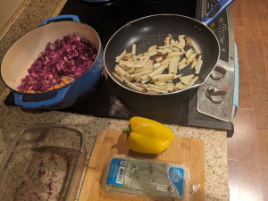
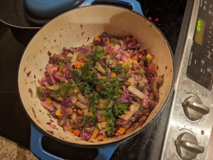

Tuna Cabage Salad
 
Ingredients:
- Half cabbage, lemon
- Onion, tuna, potato, carrot, chili
- Potato
- Bell pepper, olive oil, pepper, dill
How to make it:
Chop everything
- Put cabbage with squeezed lemon in a bowl for 10 min.
- Saute onion in skillet, add tuna, carrot, chili.
- Different skillet, fry potato and add to first skillet when brown.
- Continue with the first skillet: add cabbage and cover, add pepper and dill.